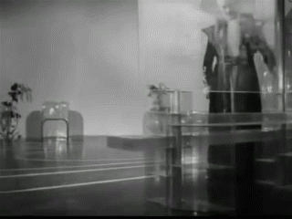
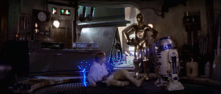
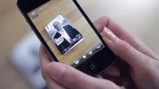

Science Fiction's Influence on the Modern Interface
INTRODUCTION
The field of graphic design is quickly changing. The developments in different media are reshaping the ways designers present content and make it interesting. Keeping up to date is not sufficient to be competitive, the designer has to become the future innovator. This means designing both the content and the viewing experience.
There are many new ways to display content in both the real world and the virtual. Designing for paper or screen is no longer the dividing question as the screen is continuously branching into further parts of our lives, providing new opportunities for designers to try the unconventional. But with such a strong presence, the interfacing innovation has become stagnant. Every screen around us is a rectangle, even if it’s slightly bent or twisted. The content designed for it is bound by the boarders, the content on it is manipulated by a mouse, a keyboard or a finger. This is perfectly reasonable for people enjoying cinematic films made for widescreen displays, but using the same screen for work, where the interface has to correspond to the display, is limiting the person using it and the people designing the experience.
Much of the world has already been created by science fiction. From simple things like the sliding doors at the supermarket to the Internet itself. With such a powerful source of knowledge in our history, we should look back at what science fiction creators envisioned for the future. What they wrote and the vocabulary they created to explain their unfamiliar ideas, how it was translated into film visuals and finally brought to life by inspired designers and engineers. For progress to be made in how we increasingly interface with our computers, we need to redefine the interfacing medium by finding inspiration and technique from what has already been thought up.
My formal research will be separated into three categories. In the first I will look at the vocabulary of science fiction, the ways it has been woven into our daily dictionary and how the word “interface” has developed over time to become the link between the user and the device. I will then look at the content of onscreen interfaces and the evolution behind them and their distinct looks. And the last part of my research will focus on the subject of revolutionizing the display itself, how the designers and the users can hopefully see themselves working and enjoying content in the near future.
By looking into this topic, I hope to end up with a better understanding of what interface designers have imagined in the past, not bound by real world function or norms, free to explore newly imagined possibilities, as this is also needed for future designers to find ways to innovate and push interface design further for everyone.
THE VOCABULARY
1.1 The world changing words
We live in a society where most people know and more importantly are interested in the technological and scientific advancements around them. Millions of people watched the Rosetta-Philae comet landing on the 12th of November 2014 and during the latest iPhone 6 unveiling in September 2014, the number of people interested in seeing the new technology showcased live was so high, that Apple’s servers crashed and were down for the better part of the event. It has become interesting and easy to follow these types of news and events, as the topics and terminology they cover have become such a prominent part of our lives. We know what a spaceship is, we know what a robot is and we know what the Internet is. We don’t need to describe them or add a picture. But while it is easy to talk about these elements now, during their conception the authors had a lot of trouble trying to explain them and their function.
There is no definitive answer to what the first real piece of science fiction literature was, but many people including astronomer Carl Sagan and writer Isaac Asimov have referenced The Dream written by German mathematician and astronomer Johannes Kepler in 1608 as one of the first. In his novel Kepler describes travel to the Moon with the help of magic, witchcraft and demons. He used these elements as a way to treat what could not yet be explained. Soon after, in 1610, Kepler wrote to Galileo Galilei describing human ambition and imagination to explore: “As soon as somebody demonstrates the art of flying, settlers from our species of man will not be lacking on the Moon and Jupiter. … Who would have believed that a huge ocean could be crossed more peacefully and safely than the narrow expanse of the Adriatic, the Baltic Sea or the English Channel? Provide ship or sails adapted to the heavenly breezes, and there will be some who will not fear even that void of space. … So, for those who will come shortly to attempt this journey, let us establish the astronomy: Galileo, you of Jupiter, I of the Moon.” In 1865 Jules Verne treats space travel as an engineering problem in his novel From the Earth to the Moon. He notes the pull of gravity near planets in space, the lack of air and weightlessness. He does this without using the word spaceship. Only in 1894 was the word spaceship first used in writing by John Jacob Astor IV in his novel A Journey in Other Worlds, much after the idea of space travel came to be and decades before any actual space travel. This same pattern has been true for most significant scientific advancements, from H.G. Wells 1870 novel Twenty Thousand Leagues Under the Sea where similarities have been drawn to a modern lead-acid battery powered electric submarine to the prediction of the Internet by Mark Twain in his 1904 science fiction story From the London Times where an invention called the “telelectroscope” is used for worldwide information sharing.
Many of the world changing technologies and advancements have come from times when even authors themselves couldn’t at first describe what they were trying to imagine into words. But they laid a foundation for future generations to build and evolve upon their ideas. And while space travel has been one of the core ideas behind science fiction for over a century, freeing people’s imaginations and giving us men like Yuri Gagarin and the Apollo 11 crew, it has lost some of its appeal in the latest generations. People have moved from looking up at the stars to looking down on their screens and keyboards. This has led us to being more closed and individual, often finding a way of incorporating an interface between us and our subject.
1.2 The Origin and Evolution of the word "Interface"
While the origin of the word “interface” does not have a straight relation to science fiction, it was coined around the same time as many of the earlier science fiction stories and soon became a very influential scientific term. The word “interface” was formulated by James Thompson Bottomley in his 1882 book Hydrostatics. In it he describes the various states of liquidity and viscosity: “A perfect fluid may be defined as a body, the contiguous parts of which exert pressure upon each other perpendicular to the interface which separates them at the interface.” In its earliest form the word “interface” referred to the moment where exchanging of materiality occurred. Only in early 1960s did the word find usage as a verb to describe the relation and exchange of information between two entities. This was brought on by the term being referenced in computer science by Marshall McLuhan, a philosopher of communication theory. During this period it went through multiple descriptions of representing both form and content.
In his book The Mobile Interface of Everyday Life, Jason Farman describes an “interface” through the example of a mobile device. He says that a mobile device cannot be considered an interface even though it is the link between the user and the content on the screen. Rather the mobile device is simply a part of an overall interface that constitutes for the larger set of social relations. He claims that the transformation to an interface comes from how we use the mobile device, be it to receive or make phone calls, exchange data and even the activities that happen without human interaction such as charging the device itself. By his definition the interface is then the arrangement and function of these actions on a medium. But to define it and simplify it further many metaphors have been put in place to explain the interaction with the interface. In computer terms we often call them elements such as gateways, doorways or windows and by doing so we muddy the description of what an interface is and what it does.
Alexander R. Galloway says that because of the way people metaphorise many of the mediums they interact with, the word “interface” has become synonymous with media itself. By doing so we consider frames or containers of content themselves as interfaces. Users might see a television or an ATM screen as an interface. And while these metaphors of doorways and windows were helpful in introducing the interfaces to many of its users and explained a part of the interaction during its conception, they have stuck around for too long. We should not consider the interface and mediums as one and the same.
An “interface” can be defined by multiple perspectives. Brenda Laurel, a video game designer, defines the interface as a surface where the necessary contact between interactors and tasks allow functions to be performed. Norman Long a sociologist researching social interface theory describes it as a critical point of interaction between life worlds. The understanding of the word interface is then considered a general one but can be defined in the setting of the Human – Computer Interface as: the way, the context and the content of reading, through engagement.
1.3 Interface in the context of science fiction
The “interface” is in essence a very generic and general term, but this can be narrowed down by defining the context in which it is used. Even in the field of computer science an “interface” can refer to multiple occasions and actions, but I will be focusing on the visual interface of Human – Computer Interaction. This refers to the way we already interact with the computer. The keyboard, the mouse, the screen, the speakers – they are all ways of interacting with the box underneath our desks or in our hands. And while some science fiction elements I will be researching go beyond physical, my main focus will be on interface aspects that are visual and describable.
THE LOOK OF AN INTERFACE
2.1 Push to exit spaceship
Georges Méliès, Le voyage dans la lune, (1902)
In Georges Méliès 1902 silent film Le Voyage dans la Lune, as the space capsule has crashed on the moon, the people in it push the door open to exit their shuttle. A spaceships door or hatch is a key part of the interaction between an astronauts and the empty void around their shuttle. It is the interface between them in a claustrophobic capsule and their exit from there. As such, Nathan Shedroff brings out an interesting aspect of Méliès movie in his book MAKE IT SO Interaction Design Lessons from Science Fiction in that the door of Méliès space capsule has no lever, no button or handle. The door is simply pushed open.
While the movie itself is not an exemplary work of science theory, the exiting of the shuttle without interacting with the door besides pushing it shows the mentality of the time this movie was made in. With the advancements of mechanisms in to the 1920s, it is clear why 1927 Metropolis was a huge contrast to Méliès movie and featured an enormous array of levers, knobs, switches and dials.
Fritz Lang, Metropolis, (1927)
Shedroff thinks this could be contributed by the war times, as many of the soldiers who spent long periods of time in the button-filled war scenarios, be it war rooms, tanks, submarines or planes,became accustomed to those as a way of manipulating, at the time, state of the art technology. When finalizing their service and going back home, they would take those images of levers and switches with them, and as cinema consumers expect it from science fiction visuals portraying the future technologies. This shows an introduction into the development of science fiction visuals from the designers perspective, as the futuristic elements used in the film had to have strong references to the period of release, for the viewers to make sense of what they were seeing. The more buttons and controls on a control board, the more possibilities it produced making it futuristic and exciting.
One of the first real attempts at making a purposeful interface, a step away from the fiction side and towards the more scientific, came in the 1950 movie Destination Moon. Instead of filling a wall with extensive meaningless buttons, Robert Heinlein, a science fiction writer, was asked to collaborate with making the movie and provide input regarding the interface for the astronaut’s spaceship that would mimic a real spaceships interface. Each gauge had a reason and each button a purpose. This showed a trend for realism in the way designers were asked to fake the interfaces in movies, getting closer to science fiction becoming part of the real world.
Gene Roddenberry, Star Trek: The Original Series, (1968)
Gene Roddenberry, Star Trek: The Next Generation, (1987)
While anything that has the function of switching something on or off can be labeled a button, it can be visualized as something even simpler. The original Star Trek TV series with its large production budget was a guide to many future science fiction designers. The multitude of flashing lights on extensive consoles, each a button or a switch. This left a feeling of importance to the actor using it. When it came time for the reboot of the series 20 years later in 1987, the budget to build the similar looking hand wired flashing light button consoles was not there. The production designer of the series Michael Okuda decided to go with a much less expensive console method. He simply put a color film with a printed interface on a transparent table and had lighting underneath it for illumination. On a smooth surface this created the illusion of an interface without physical buttons, much like our current touchscreens. It became the icon for the interface technology of the whole series and resonated through many follow-up versions of the series. The buttons of science fiction had moved from pushing a door to pulling a lever to touching a buttonless button.
The past years have been very touchscreen heavy for many interface fields, most notably mobile devices such as phones and tablets. But while modern science fiction imagery shows us a future filled with floating touch based interfaces and other screens lacking in physical buttons, the Software usability Research Laboratory at Wichita State University has done extensive research on the subject of touchscreen typing versus physical keyboard typing, and has concluded that while we interface with our computers using our hands and more importantly our fingers for typing, a physical keyboard with its tactile feedback is still dominant in terms of productivity compared to touchscreens.
Tactus Technology, (2013)
Shedroff asks in his book if we will make a full circle back to physical levers after the touchscreen craze has calmed down, as our hands are made to interact with levers and buttons rather than touchscreens, but I think looking back at science fiction pushes us out of predictable loops. Tactus Technology is developing a surface that can mold its screen to have buttons of any kind or layout overlaying a touchscreen. This further blurs the line between what is a physical button and what our fingers can be comfortable interacting with, while giving designers the freedom to push further the developments of the content itself.
2.2 Capitalized green text
George Lucas, Star Wars: Episode IV - A New Hope, (1977)
As with the depiction of space travel, the early years of computer interfaces in movies relied heavily on imagination. One of the earliest 3D computer rendered interfaces in science fiction cinema was in 1977 Star Wars Episode IV: A New Hope. In the scene the pilots are shown a three dimensional representation of the Death Star trenches composed of vertex points and lines. While the way it was produced was using virtual world coordinates and programming, with visual output only existing after a tedious programming effort. The outcome shown is very similar to how the current 3D industry has adopted to making 3D models for CAD application, 3D printing, game character development and even still, visual effects in movies. This was mainly contributed to Edwin Catmull who in the 70s was pioneering the efforts to develop computer generated imagery.
While there are a multitude of examples towards visualizations in early science fiction movies, they can be divided into two main categories: text based interfaces and graphical user interfaces. There is not much chronological effect to them. They have been overlapping since eithers conception, but the mood and feel they produce has been significantly different.
Ridley Scott, Alien, (1979)
Text based interfaces also referred to as Command-Line Interfaces are still with us today making the use of them in early science fiction cinema not very utopian. They are used for programming, website building and in-depth interaction with our computers, even though most users might never have opened a Command-Line Interface on their computer. The main change between the look of prior text based interfaces and the modern ones is mainly contributed to the resolution of the screens and the color coding of the interface tags. Early text interfaces, while complex and difficult to learn, had a very distinctive look to them. The low resolution capitalized sans serif shapes as type, the mono colored screens, the mechanical way of typing and the feel of the keyboards. In Ridley Scott’s 1979 movie Alien, the spaceship has a number of futuristic aspects about it, but the main interface with the spaceship commanders is through a screen that even at the time the movie was made, felt almost archaic. This mainframe style computer that required slow and heavy single key press typing, set an atmosphere matching that of the relation between the inhabitants of the spaceship and the alien aboard. In this scenario a more futuristic interface would have not been suitable to show the creeping struggle of the crew. The interface matched the steady almost ticking-like environment.
Joseph Kosinski, TRON: Legacy, (2010)
Text based interfaces are also used in conjunction with hacker culture. Most famously referenced by movies like 1999 The Matrix, 2001 Swordfish or 2006 Firewall. Often the text based interfaces in these movies are either not the focus of the scene, and as such are left ambiguous and out of focus, or they are an integral part of the character development showing the advanced knowledge of a person. Command-Line interfaces are also used to bring a certain level of nostalgia to an environment as it represents the most basic and fundamental beginnings of the computer interface. An example of this is the 2010 movie TRON: Legacy where the main character uses an old dust covered computer that while functioning as a touchscreen had the visuals of a 80s CRT monitor for a designed mix of the past and the future.
Iain Softley, Hackers, (1995)

Robert Longo, Johnny Mnemonic, (1995)
The 1990s brought on the internet adoption and with it the need to describe computer file structures, networks and data in general. And while many descriptions of them used metaphors like the city, the web, the window, the doorway, science fiction movies had to describe them visually. This prompted a myriad of interfaces trying to portray computer based networks, data structures or accessing files by hacking. Some of the more visual ones were in 1995 Hackers and Johnny Mnemonic. Hackers visualizes the internet as a spatial layered three dimensional array of containers where data is moved on an object basis. Visual symbols such as worms, rabbits and skyscrapers are covering the user’s interface to portray data and by doing so the information on screen becomes obscured. Johnny Mnemonic takes a more practical approach as a user wearing a virtual reality headset almost identical to current Oculus Rift or Sony’s Morpheus goggles, sees a spatial representation of data and the internet as a literal cityscape that can be navigated with gestures. The way these two movies visualize the internet and display data are extremely over the top and unpractical, but there is logic behind them.
Muriel Cooper, Information Landscape, (1994)
In 1994, one year prior to these two films, Muriel Cooper a digital designer and researcher presented her groups work done at the MIT Media Lab at a TED5 conference in Monterey, California. What she and her group worked on was developing a way to visualize typography in three dimensional space. She called this research: Designing an Information Landscape in Time and Space. During the talk she presented a number of demos put together to show how typography could function in endless space and how moving through data could be done in a more engaging way. It was a revolutionary moment as the trend for interface design at that time was solely based on the desktop metaphor with overlapping opaque rectangles. What Cooper visualized was a way to stack information and show hierarchy, navigate through it and see data horizons of possible headings. Scale through containers of filterable topics, visualize data as graphs and amounts without the need to swap applications. This was a groundbreaking way to treat information on the computer. Text no longer had to be treated as pixels parallel to the screen. Just as street signs direct our stare by pointing the way, so too did Coopers way of displaying data give us direction for navigation. While mainstream acceptance of this style of navigation has not been attempted, many science fiction films noted Coopers visuals for their own idea of the futuristic interface, thus giving hope to at least a partial adaptation of her demo in actual usable form.
2.3 GUI
XEROX PARC Star, (1982)
With the wide adaptation of office computers in the late 80s the cumbersome command-line interface had to be simplified. While much of the advancements in home computing interface has been given to Apple with their Lisa line of computers, the actual revolution of an interface came from XEROX Palo Alto Research Center (PARC). Many science fiction movies before had treated the computer screen interface with layout elements and buttons, but at PARC they were the first to develop the desktop related Graphical User Interface (GUI) that we are still accustomed to today. The imagery they produced was not covered in eye candy as it is nowadays but it was a strong and simplified foundation to build on.
Science fiction graphical user interfaces can be looked at from the visual aspect such as its shape, colors, use of typography and image, but also from the content they were made to show: maps, infographics, or specific actions. Science fiction cinema has been hard at work to create futuristic displays that do not fit our standards. Shape wise that has accounted for non-rectangular screens and bent display surfaces. But with movies such as 2002 Men in Black 2 or 1999 Star Wars 1: The Phantom Menace pounding viewers with irregular displays, circular displays and ultra-high definition displays, with such strong presence in our movie catalogue, it didn’t take more than a decade for researchers to develop such screens, and by now we can have them in our homes or on our wrists. Latest examples of this would be the myriad of inward curved televisions and outward curved smartwatches, all which provide new and interesting visual problems for designers. Even though science fiction used curved displays as a gimmick to differentiate themselves from standards, this technology is said to be of actual benefit for screen users. Most notable by curving displays the image is from every angle the same distance from the users’ eyes. This is said to reduce eyestrain on long uses.

William Cameron Menzies, Things To Come, (1936)
In my mind a less practical technology introduced by science fiction and in development currently is transparent displays. It is the wild idea that a screen should not have a background, but rather only display brightness overlaid on a see-through surface. While this interfacing method has become overly popular mainly after the turn of the millennium as seen in movies like 2000 Mission to Mars, 2002 Minority Report or 2009 Avatar, it was first imagined in H.G. Wells’s science fiction book The Shape of Things to Come, published in 1933. In the movie adaptation released in 1936 the imagery clearly shows a faint projection on transparent glass with the cast moving behind it. In the movie scene a girl remarks: “They keep on inventing new things, don’t they? And making life lovelier and lovelier.”
I can see the reason for using such a display method in film. When filmed from behind the screen it gives the ability to show the actors face and reaction to the data being shown on the display while keeping the rest of the interface ambiguous as it is horizontally flipped and unclear. In the real world though, on a user’s workdesk, such a display would simply confuse the eye while focusing on the display itself, but there are uses for this type of technology. One part of this technology that has been implemented to mimic a transparent display is the Head up Displays (HUD). First used in military fighter jets where it shows altitude and tracking information and later used in commercial cars where it displays speed or navigation. Unlike the desktop environment pictured in science fiction movies, in the case of vehicle HUDs, as it is not the main focus during driving it works as a helpful guide rather than a distraction.
Typography and color play a large part in the way of defining an interfaces usefulness and application. In his book Shedroff generated a color scheme of science fiction cinema, bringing out the most used tones by year. With certain deviations in 1989, 1991 and the mid-2000s, the irrefutable color of science fiction displays is a mix of blue. One of the men behind many of the looks and feels of modern science fiction interfaces is Mark Coleran, an interface designer who is often commissioned to develop interfaces for television series, video games and Hollywood movies. Some of his most notable works are for films such as 2006 Children of Men and 2005 The Island. In his blog he brings out four reasons he believes science fiction has adopted the color blue for its identity - the first being RGB displays. He says film set lighting, especially in older films, has always been very bright. This can wash out the details presented on the screen in focus. Using a single main color from the red, green, blue displays, gives it a stronger emphasize. And as green is associated often with past technologies, like the command-line interfaces of the 70s and red has a predefined danger and military reference, what was left was blue. A more unconscious reason is that screens on film have a tendency to look bluish. This can be balanced with preemptively making a screen look warmer while filming or fixing it with color grading in post-production. The last two reasons Coleran brings out have to do with people’s color-vision. This refers to the color blue being the first color we process in our brains as it has the shortest wavelength, making it more preferable by most people. And with decades of blue color already as the key tone in interfaces, viewers can use the color as a familiar link on an otherwise exotic display technology.
James Cameron, Avatar, (2009)
Content itself on displays is usually in the form of typography or infographics. In the case of the latter, it has become the goal to show emphasize rather than actual information or data. This is especially apparent in newer movies like 2009 Avatar, 2014 Guardians of the Galaxy and most of the Ironman films where many displays have simply become windows to play an elaborate animation on, rather than show an imaginative futuristic functional application. Looking at older science fiction films and the information they displayed on their screen, it was more about what the designers imagined a computer or device could do and how the people interfacing with it would use it and benefit from it. This can be seen many times in Stanley Kubrick’s 2001: A Space Odyssey. The tablets shown angled on tables set a feeling for the environment as a casual locale, while being useful at carrying on the plot of the movie. With technology catching up on many science fictions greatest devices, the relation between the content and device has blurred to the point where futuristic interfaces have simply become a .mov file.
Stanley Kubrick, 2001: A Space Odyssey, (1968)
Typeset in The Future is a website blog dedicated to looking into typography presented in iconic science fiction films, be it the title sequence, interfaces and displays, buttons, labels or even logos. In their articles they dissect the most prominent scenes in science fiction history and look at what the set designers have said with their use of typography. Unfortunately what they discovered is that rarely is there any deviation from already set 20th century typographical norms. The most used fonts in science fiction films are considered to be Microgamma, Eurostyle and Helvetica, with 7-segment and OCR A / B used as scene specific extras. This is a strange aspect, as looking into the typographic developments in the last few century alone would give hope to this progress continuing in the 21st century and further. But what we are treated with is the same norms as today. Dave Addey, one of the writers on Typeset in The Future suggests that this could simply be a balancing element. With many components of a science fiction scene already being wildly futuristic and bizarre, typography is used as the piece that can still make it recognizable to the viewers. Another reason for keeping the typography so clean and recognizable could be the idea of Chekhof’s gun. This is the principle that every element in a narration needs a purpose and cannot be replaced. In the case of typography in science fiction films, the Chekhof’s gun is the large red text on a door that read “CAUTION, EXPLOSIVE BOLTS”. The unsurprising climax being that at one point during the movie the explosive bolts will have to explode. As the average shot length of action sequences is around 2-3 seconds per shot, the time viewers have to read any text on the film screen is very limited. This is obviously the reason for the simplistic typography in films. Some interfaces in science fiction keep the information on them ambiguous as it is not vital to the plot, but when there is a message to be told by a screen, it is sized almost edge to edge. Freezing the film and judging the interface as a still image counts for a very disappointing experience as the usability of the interface can seem close to useless except to display that one word message. This leads to less typographic excitement on the side of movie interfaces but designers try to make up for it by playing with the type of title sequences. Two notable ones being Stanley Kubrick’s 2001: A Space Odyssey and Ridley Scott’s Alien. Kubrick’s film starts with a calm camera tilt across space with the title sequence popping up in Gill Sans, having its “O” letters exchanged for the almost perfectly circular zeros. Alien however starts with a 90 second long eyrie fade in of lines that eventually spell out the movie title. While typography plays a very specific plot role in the midst of a film, it is exciting to see designers being able to make something typographically memorable for science fiction movies in the form of title sequences.
3.1 THE THREE DIMENSIONAL PIXEL
3.1 Layers upon layers
There aren’t many science fiction movies nowadays that don’t try to add an element of depth in the look of their interfaces. This is achieved in different ways – holographics to show a three dimensional entity, or more frequently, with layering of the user interface elements. In movies where we only see a few clicks of such an interface, the usability of it might seem reasonable, but in relation to how people interact with their screens for actual work, a three dimensional display would simply be an uncomfortable experience. Jakob Nielsen, a former Sun Microsystems software interface engineer and one of 28 Bloomberg Businessweek’s listed World’s most influential designers wrote an article in 1998 titled 2D is Better Than 3D. In the article he describes reasons why a three dimensional interface is an interesting concept that doesn’t fully work. The first and most important reason he brings out has to do with the evolution of humans. He wrote: “Evolution optimized homo sapiens for wandering the savannah – moving around a plane – and not swinging through the trees. Today this evolutionary bias shows in comparing the number of people who drive a car versus the number of helicopter pilots: 2D navigation (on the ground) vs. 3D navigation (in the air).” He then continues to describe more practical problems with a depth based display such as our interaction devices. The keyboard, the mouse and the tablet are all planar tools, fixed on two axis making them cumbersome for straightforward three dimensional use. Screen resolution needs to be extremely high for text and image to be recognizable at a great perspective distance. Navigation would need to be relearned by users on a large scale to count for the extra dimension. The software side producing the three dimensional image would need to be standardized just as image and text files have been.
SpaceNavigator, (2003)
In 1998 these were all valid reasons to look at three dimensional navigation on screen and regard it as unusable. Even with Muriel Cooper’s revolutionary design for spatial navigation in 1994, the practical side of such an interface would still be an issue. But in 2014 most of the practical problems regarding the three dimensional interface have been overcome. We have multiple devices made solely for navigation in all three axis such as the SpaceNavigator 3D mouse by 3dconnexion, which incorporates pushing and pulling to the already standard planar tracking devices, and the Phantom Omni haptic device, that lets surgeons use a physical pen to learn and navigate a virtual patient, or even the Leap Motion, a device that tracks your hand and finger motion and virtualizes their movements on screen. We also have screens that have pixel densities going far and beyond what the human eye can distinguish. And as the adoption of touchscreens has shown us, a well thought out revolution in interface design and technique will have no problem being embraced by the masses. This only leaves the initial limit of humans not being well equipped for three dimensional navigation due to evolution, but I would imagine, with a beneficial and functionally designed interfacing method with spatial navigation, such a limitation would start to be overcome.
3.2 Volumetric projection
iO2, Heliodisplay(2007)
Interface projection comes in multiple forms. A simple one would be projecting a laptop screen on a wall using a projector. A more complex one would be projecting on multiple layers of air particles rather than anything solid, as is the case with iO2’s mid-air projectors. Nathan Shedroff also draws a clearer picture by defining what a volumetric projection is compared to a hologram. He explains that even though many people mentioning holograms might refer to any number of scenes from science fiction classics such as the Star Wars IV’s R2D2 projection, they would be slightly wrong calling it a hologram, as that word actually refers to the little rainbow colored image often found on the back of products or credit cards. The actual name of mid-air projections as seen in science fiction films is volumetric projection.

George Lucas, Star Wars: Episode IV - A New Hope, (1977)
Volumetric projections in movies have a very specific look. They look grainy and have scanlines incorporated in their visuals. They glow a certain color (usually blue) and have a source for the projection such as a floor-mounted projector. Of course when thinking about projections mid-air, it seems natural, that a certain level of noise would be incorporated in the image, as air is constantly moving unlike a physical wall or a screen. But the incorporation of scanlines, a function referring to older technology is strange. Shedroff’s suggests this is simply a way to emphasize to viewers that what they are seeing is in fact a volumetric projection, and nothing physical. This is achieved by forcing the look of the visual to be low quality and detached from the scene around it. This goes into a strange run-in with real world adaptations of volumetric projections that while trying to produce the clearest, most true to life and natural image in the form of a projection, end up looking fuzzy, out of focus and disconnected from reality. Another problem with this type of projection is related to transparent screens. It is difficult to focus on something floating in the air that is not physical. Perhaps this has more to do with the convention of using flat screens where the eye is constantly at a fixed focus distance away from the display. In cases like this a mixed medium of the physical world and projection could be a needed step where projections take place on surfaces around the user rather than mid-air, such as the interfacing method sixthsense developed by MIT Media Lab.
3.3 Augmented Virtual Reality

Layar (2013)
Augmented and virtual reality are a display technique that have been getting more popular in the past few years. It refers to the use of a device to alter the perception of reality around a viewer rather than changing anything physical. As such it is only an overlay between the eye and the backdrop. In science fiction it has had both a Heads up Display usage but also as a medical overview tool. In the 2002 science fiction TV series Firefly a simulated version of the patient is projected with translucent skin to show the internals of the body. This technique is very common as a way to display medical information in movies, as it can be used to quickly visualize a problem. While augmented reality does not only refer to visual output, it is the most common and currently the most sought after in development. Examples of augmented reality are already in our daily lives, though not yet very visible. Many print magazines add pages into their publications, that when scanned with a mobile device, reveal extra information and interaction on the devices screen, in relation to the magazine. One of the forerunners in this technique is a Dutch company called Layar, that tries to incorporate augmented reality into publishing, advertisement, education but also elements of shopping. A more controversial augmented reality device would be the Google Glass, which removes the need to manipulate a device in hand and tries to incorporate a constant visual layer of information into your field of view. The trouble with either technique is the cumbersome interaction that needs to take place. Either getting the mobile phone out to scan something or continuously wearing a pair of glasses only for the few moments that augmented information is important to you. This limits the developers with designing the augmented side of the world while at the same time not providing any content for users to feel the need to invest in a dedicated augmentation device. Many related devices currently in development such as Sony’s project Morpheus or the Oculus Rift have tried to push the reality devices more as a gaming peripheral rather than an overall everyday tool. By doing so they have made adoption of this new technique more specific and as such, easier to design and develop for.
3.4 Gesturing
Humans gesture with each other constantly, so it would seem only natural that the same carry over to human-computer interaction. In the early days of computing it was necessary to have a device in between the user and the computer to transmit commands, be it with a punch card during the IBM mainframe era or with a mouse and keyboard as has held true for the past few decades. But as early as 1951 were the viewers of science fiction introduced to gesture based controls. The Day the Earth Stood Still, released in 1951, had the earliest scene showing a gesture based buttonless interaction with a device. In the movie the main character opens a door by waving to a panel and the door opens, then proceeds to do the same on the controls of his futuristic spaceship.
John Underkoffler, Pointing to the future of UI, (2010)
This interaction method has become a part of many futuristic interface designs across ranging platforms. It has been shown in conjunction with volumetric projection displays, transparent displays and even simple touchscreens with a hover function. Gestures are already part of our everyday actions in forms such as scrolling with the mouse or swiping on a tablet, but the most iconic and talked about gestures are the ones in 2002 Minority Report, where the main character is shown navigating a transparent display filled with information by doing emphasized full arm and hand movements. While this gesturing type has been disproven many times as an overly impractical one for humans, who by nature have limited capability at holding up their arms for extended periods of time, knowing that the concept and technique behind one of the most talked about science fiction movie interfaces is based on real working research, is an exciting thought. In 2010, 8 years after the movie released and demonstrated the stunning new interfacing capabilities of the future, John Underkoffler an interface designer showed live at a TED talk, that the technology and interface of what was predicted 50 years from now in the movie, was already a reality. During the creation of the movie he and his team at MIT were asked to create the design of the interface used in the movie but treat it as a research project. By doing so they did not design only the visual outcome for the film, but also went through multiple steps of refinements and failures to create technology and a new way of functionally interfacing with the computer. While at the time the movie was made their research outcome had to be improved with the use of post-production and effects, during his talk in 2010 at the TED conference, he showed a working and completely functional interface based on what can be seen in the movie. On screen it matched much of what Muriel Cooper was displaying 10 years earlier, but added the missing way to interact with three dimensional spatial scenes on a computer screen.
Gesturing is going to be the human side of interaction in the future. Peripherals like keyboards, mice and trackpads will be defunct as soon as their practicality as a work tool is surpassed by a more human and functional interfacing method, just as it has already happened with the leisure side of tablet and phone navigation.
CONCLUSION
With the screen being an ever-growing design medium, in both current and future predictions, graphic designers need to be on the forefront of development for the new kinds of interfaces that come with it. This means not only designing for and with already developed platforms, but also being part of imagining new and more functional solutions. The flat screen display, keyboard and mouse have reached their peak in terms of innovative advancements and the content being designed for them is therefore bound. Science fiction has given us much of how we speak and how we build the world around us and I’m certain it will do the same for the way we will be interacting with each other and our computers in the future, as it has done in the past.
There has been a lot of experimenting going on in the field of interface design in both content and medium. With Muriel Coopers 1994 envisioning of the way computers should display spatial information, many designers got inspired at new possibilities to be explored. This spark gave hope to the stagnant user interfaces of the time but was limited by the practical capabilities of hardware. Now with emerging technologies like the Oculus Rift, the Leap Motion or even the Microsoft Kinect, designers are able to imagine new interfacing methods and present them to the world. And such examples are already happening at conferences around the world.
Just as levers before them, physical buttons are leaving the current world. The more elaborate gesture based controls are replacing the archaic On/Off switches. While currently those gestures need a surface to have an effect, in the future, the click will be dead, replaced by a swipe in mid-air.
The interfaces we see in science fiction are prototypes, they are as most things in their early forms, riddled with obvious drawbacks, flaws and problems. But they do show a direction, a guideline to what could be achieved when not looking for the next step with our current technology, but rather taking a few steps back and trying a different path, hoping to design a new way of making things better.
-
Sample, I. and Clark, S. (2014). Comet 67P becomes landing site for Philae in historic touchdown. [online] the Guardian.
-
Peter Cannell. (2014). iPhone 6 Launch Day Crash.
-
Lear, J. and Kepler, J. (1965).Kepler's Dream. Berkeley: University of California Press.
-
Bottomly, James Thompson. Hydrostatics; or Theoretical mechanics, Part 2. London: William Collins and Sons.
-
Farman J. Mobile Interface Theory. New York: Routledge; 2012.
-
Galloway A. The Interface Effect. Cambridge, UK: Polity; 2012.
Shedroff N, Noessel C. Make It So: Interaction Design Lessons from Science Fiction. Brooklyn, N.Y.: Rosenfeld Media; 2012.
Chaparro B.Keyboard Performance: iPad versus Netbook. Usabilitynewsorg. 2010.
D'Onfro J.This Insane Technology That Makes Buttons Appear On A Flat Smartphone Screen Is Pretty Close To Magic. Business Insider. 2014.
Dailymotion.STAR WARS - THE MAKING OF THE MYTH (Documentary). 2014.
-
Hiltzik M. Dealers Of Lightning. London: Orion Business; 2000.
Immersaview.com.Why Curved? - ImmersaView. 2014.
-
FURUKAWA M, OKABAYASHI S. Automotive heads-up display. Journal of the Japan Society for Precision Engineering. 1989;55(5):814-817. doi:10.2493/jjspe.55.814.
-
Noessel, C. (2012). color differentiation | Sci-fi interfaces. 2014.
-
Mark Coleran."Why So Blue?" 2014.
-
Addey D.Fontspots: Eurostile. Typesetinthefuturecom. 2014.
-
Strathy, G. (2012). Chekhov's gun: a useful plot device
-
Nielsen, J. (1998). 2D is Better Than 3D.
-
Kovsky, S. (2007). Next-Generation "Mid-Air Display" Technology Debuts.
-
Yoo, H. (2014). On Study of the Volumetric Display Techniques In Interactive Media Arts Proceedings.
-
Zetter, K. (2009). TED: MIT Students Turn Internet Into a Sixth Human Sense
-
Johnson, L. (2013). Augmented reality trumps QR codes for print-to-mobile engagement
-
Plemmons, D. (2014). Leap Motion Developers.
-
Underkoffler, J. (2010). Pointing to the future of UI.